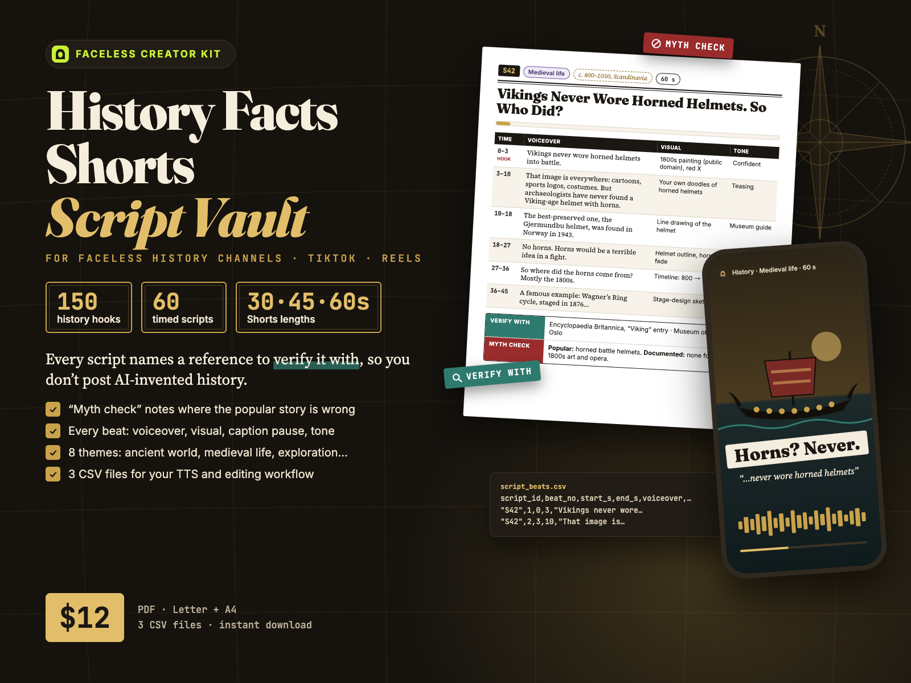
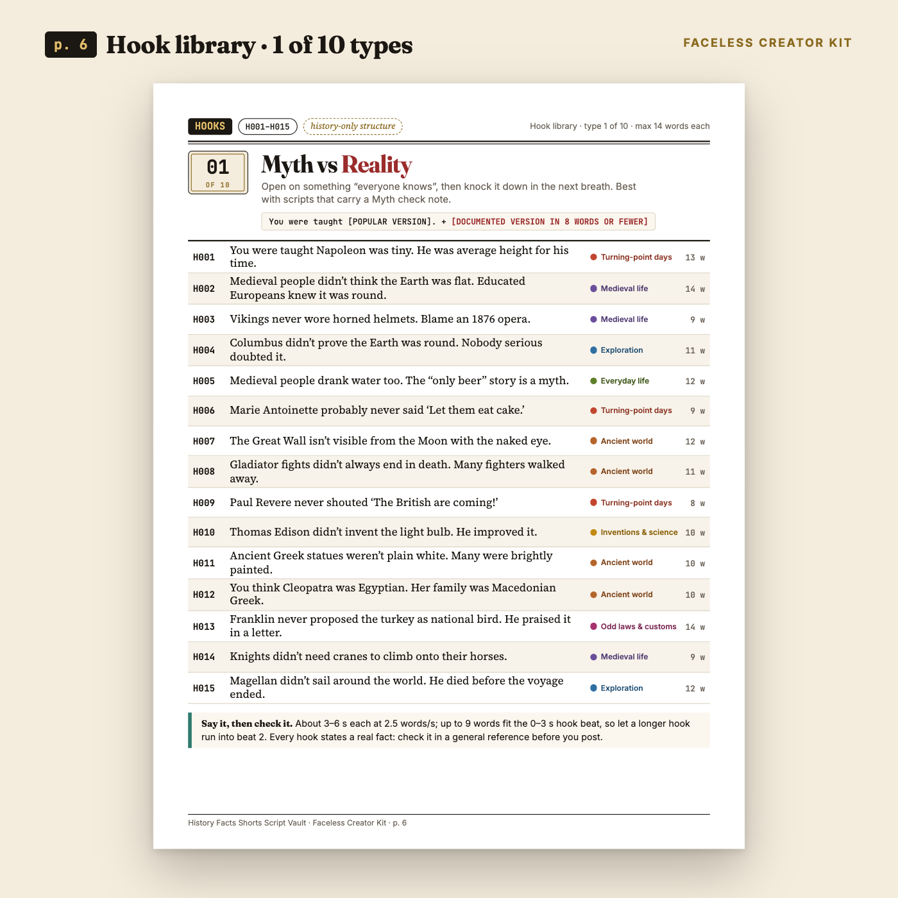
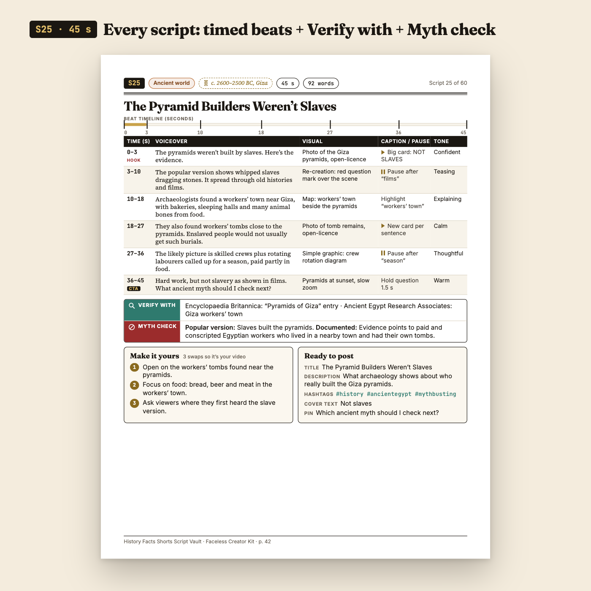
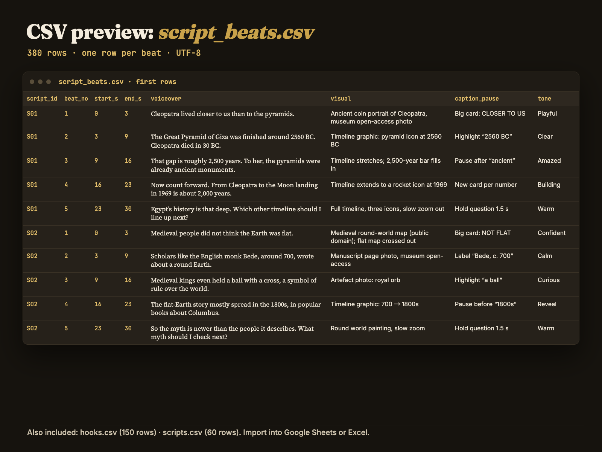

150 history hooks + 60 timed, source-pointed history Shorts scripts — every fact has a “Verify with” note so you don't post AI-invented history.
A history-only script library for faceless Shorts, Reels and TikTok: 60 finished scripts timed beat by beat for 30, 45 or 60 seconds, each with a named reference to check it against and a Myth check line. 80-page PDF (US Letter + A4) + 3 CSV files. From Faceless Creator Kit, the creator-tools imprint of Hustle Studio.

$12.00 USD, one-time, instant download (about $0.20 per script)
Buy now: $12 Read the free sample first🔒 Secure checkout. Payment is handled by Waffo Pancake, our merchant of record, which processes the payment and the sales tax and accepts common debit and credit cards. Waffo sends you the receipt; we never see your card details. Right after payment you go straight to the download page.
↩️ 14-day refund, no questions asked. Email chenphien@gmail.com within 14 days of purchase and we refund you in full through Waffo Pancake (see Terms).
✅ Satisfaction guarantee. Not happy with the vault, for any reason? Full refund within 14 days. That includes finding a fact in a script that doesn't match its own “Verify with” reference.
✉️ Real support. One email address, answered by the people who made the vault, within 2 business days.
🆕 New shop, honest about it. This vault is new, so it has no reviews yet, and we won't invent any. Instead: read 10 hooks and one complete script for free, word for word; every image below is a real page from the PDF or a real view of the CSV; and all 60 script titles are listed further down.
We are not professional historians, and no outside historian has reviewed the scripts. Here is what we did instead, so you can judge it yourself:
Found an error? Email us the script ID and what's wrong. We check it against the named reference, and if the script is wrong we correct the files and put the new version on the same download page, free for every buyer. Please still check each fact against its reference before you post.
One hook from each of the 10 hook types (H001, H016, H031, H046, H061, H076, H091, H106, H121, H136) plus the complete 30-second script S01: every beat with its time, voiceover, visual, caption / pause and tone, the Verify with and Myth check lines, the 3 “Make it yours” swaps and the full “Ready to post” box. Copied word for word from the paid files; no email or signup. Save it as a PDF with your browser's Print button.
Open the free sample


The complete 30-second script S01 and one hook of every type are in the free sample as text, word for word. The script index and the license are copied as text below.
| File | What it is |
|---|---|
History-Facts-Script-Vault_Letter.pdf | 80 pages, US Letter |
History-Facts-Script-Vault_A4.pdf | 80 pages, A4 (same content and page numbers) |
hooks.csv | 150 rows (hook_id, hook_type, theme, hook_text, word_count) |
scripts.csv | 60 rows, one per script (title, theme, era, length, word count, hook line, full voiceover, verify_with, myth_check, 3 swaps, post title, description, hashtags, cover text, pinned comment, CTA) |
script_beats.csv | 380 rows, one per beat (start and end seconds, voiceover, visual, caption / pause, tone) |
README.txt | File list, CSV import steps for Google Sheets and Excel, license summary |
History-Facts-Script-Vault.zip | All 6 files above in one ZIP |
Inside each PDF: cover, clickable contents (2 pages), How to use, Accuracy & platform notes, 10 hook pages (one hook type per page, 150 hooks), script index (2 pages), 60 script pages, a 6-step video workflow, FAQ and license. The download page has a separate link for each of the 6 files and for the ZIP.
Copied from the script index in the PDF, so you can judge the whole vault, not just the previews. Theme in brackets.
S01 Cleopatra, the Pyramids and the Moon Landing (Ancient world) · S02 Medieval People Knew the Earth Was Round (Medieval life) · S03 Magellan Didn’t Finish His Own Voyage (Exploration) · S04 The World’s Oldest Surviving Camera Photo (Inventions & science) · S05 Peter the Great Taxed Beards (Odd laws & customs) · S06 The Great Fire of London Began in a Bakery (Turning-point days) · S07 Did Medieval People Only Drink Beer? (Everyday life) · S08 The Lost Colony and One Carved Word (Lost & unsolved) · S09 Rome Taxed the Urine Collected by Laundries (Ancient world) · S10 The Bayeux Tapestry Isn’t a Tapestry (Medieval life) · S11 The Clock That Helped Ships Find Longitude (Exploration) · S12 Ben Franklin’s Kite Wasn’t Struck by Lightning (Inventions & science) · S13 England Had Laws About Who Could Wear Purple (Odd laws & customs) · S14 The Night the Berlin Wall Opened (Turning-point days) · S15 Knocker-Uppers: Alarm Clocks With a Long Stick (Everyday life) · S16 The Library of Alexandria Didn’t Burn in One Night (Lost & unsolved) · S17 You Can’t See the Great Wall From the Moon (Ancient world) · S18 Cologne Cathedral Took Over 600 Years to Finish (Medieval life) · S19 Vikings Reached America 500 Years Before Columbus (Exploration) · S20 Ada Lovelace Wrote About Computers in 1843 (Inventions & science)
S21 When Europe Put Pigs on Trial (Odd laws & customs) · S22 The First Powered Flight Lasted 12 Seconds (Turning-point days) · S23 The Man Who Shipped Ice Around the World (Everyday life) · S24 The Voynich Manuscript Nobody Can Read (Lost & unsolved) · S25 The Pyramid Builders Weren’t Slaves (Ancient world) · S26 Did Medieval People Really Die at 30? (Medieval life) · S27 China’s Treasure Fleets Sailed Before Columbus (Exploration) · S28 The First Long-Distance Telegraph Message (Inventions & science) · S29 Britain’s Tax on Windows (Odd laws & customs) · S30 The Year Britain Skipped 11 Days (Turning-point days) · S31 The Dogs That Turned the Roast (Everyday life) · S32 Amelia Earhart’s Last Flight (Lost & unsolved) · S33 The Roman Dome Still Standing After 1,900 Years (Ancient world) · S34 Gutenberg’s Bible and the Printing Press (Medieval life) · S35 The Scurvy Experiment That Took Decades to Use (Exploration) · S36 The X-Ray of a Hand That Shocked the World (Inventions & science) · S37 English Kings Kept Banning Football (Odd laws & customs) · S38 The Golden Spike That Joined a Continent (Turning-point days) · S39 Pompeii Had Street Food Counters (Everyday life) · S40 The Mary Celeste: Found Sailing With No Crew (Lost & unsolved)
S41 How the Rosetta Stone Unlocked Hieroglyphs (Ancient world) · S42 Vikings Never Wore Horned Helmets. So Who Did? (Medieval life) · S43 How Polynesians Found Islands Without Maps (Exploration) · S44 Galileo Didn’t Invent the Telescope (Inventions & science) · S45 Britain’s Red Flag Law for Early Road Vehicles (Odd laws & customs) · S46 The Great Stink That Gave London Its Sewers (Turning-point days) · S47 The Penny Black and the Birth of the Stamp (Everyday life) · S48 The Indus Script Still Can’t Be Read (Lost & unsolved) · S49 The Antikythera Mechanism: An Ancient Gear Machine (Ancient world) · S50 The Lewis Chessmen Found on a Scottish Island (Medieval life) · S51 Shackleton’s Endurance: Every Crew Member Survived (Exploration) · S52 Marie Curie’s Two Nobel Prizes (Inventions & science) · S53 Britain’s Hair Powder Tax (Odd laws & customs) · S54 The Day Sputnik Started Beeping From Orbit (Turning-point days) · S55 Before Railways, Every Town Kept Its Own Time (Everyday life) · S56 Whatever Happened to Rome’s Ninth Legion? (Lost & unsolved) · S57 Hannibal Took War Elephants Over the Alps (Ancient world) · S58 Magna Carta Was Cancelled Within Weeks (Medieval life) · S59 When Maps Showed California as an Island (Exploration) · S60 Canned Food Came Before the Can Opener (Inventions & science)
Most history Shorts fail in one of two ways: a weak opening, or a “fact” that turns out to be a myth. This vault is built for both problems.
You get 150 history hooks (10 hook types × 15 hooks, IDs H001–H150) and 60 complete scripts (S01–S60), each on its own page. Every script is timed beat by beat for 30, 45 or 60 seconds: what to say, what to show, where to pause and how to sound. Beat 1 is always a 0–3 s hook; the last beat is the payoff and a comment question.
Under each beat table sit two lines that free AI script generators don't give you. Verify with names where to check the core fact (for example an encyclopedia entry title or a museum by name and topic). Myth check states the popular version and the documented version where they differ, or “No common myth.” Facts with differing numbers are hedged with “about” or “reportedly”. The scripts contain no invented quotes.
Then each page gives you 3 “Make it yours” swaps, so your video isn't identical to anyone else's, and a “Ready to post” box with title, description, hashtags, cover text and a comment to pin.
The 8 themes: Ancient world; Medieval life; Exploration & navigation; Inventions & science history; Odd laws & customs; Turning-point days; Everyday life in the past; Lost & unsolved. Everything is PG and advertiser-friendly, with no gore.
Visual cues point to things you can actually use: public-domain paintings and maps, museum open-access photos, simple re-creations and timeline graphics. They never point to film or TV clips.
Honesty note: the scripts are written from widely documented history and our build process checked them for internal consistency, but we are not professional historians. Check each fact against the named reference before posting.
Which themes are covered?
8 themes: Ancient world; Medieval life; Exploration & navigation; Inventions & science history; Odd laws & customs; Turning-point days; Everyday life in the past; Lost & unsolved. Each has at least 7 scripts.
How many hooks are there?
150 hooks: 10 hook types × 15 hooks each (H001–H150). The first 6 types are history-specific structures.
What is NOT covered?
True crime, gore or atrocity detail, war-crime retellings, modern politics (events after 1991), living people, religion debates, conspiracy theories, and non-English text.
Are the facts guaranteed?
No. They come from widely documented history, but we are not professional historians. Check each fact against the named “Verify with” reference before posting. If you find a script that doesn't match its reference, tell us: we correct the files for every buyer, and you can still take the 14-day refund.
Will the files be updated?
We don't promise new volumes. Corrections are free: if we fix a script, the new version goes on the same download page. Bookmark it.
Why not just ask ChatGPT for history scripts?
You can, but free AI writers can state wrong dates or invent quotes with full confidence, and you'd have to fact-check and time every output yourself. Here each script is already timed beat by beat, names where to verify it and flags the common myth.
Can I add my own hooks?
Yes. hooks.csv is a plain spreadsheet you can extend with your own rows. There is no generator.
Does the same story come in 30, 45 and 60 s versions?
No. Each story is written at one length only: 20 stories at 30 s, 20 at 45 s and 20 at 60 s. The longest script is 60 s.
Can I use it on a monetized channel? (license)
Yes, on your own channels. You can use the hooks and scripts, as written or edited, in your own videos and posts, for personal or commercial use. You can't resell, share or redistribute the pack, the PDFs or the CSVs, or publish the scripts or hooks as a script product (script pack, template, prompt pack, course or e-book).
How fast do you answer?
Email chenphien@gmail.com; we reply within 2 business days. Checkout runs through Waffo Pancake, our merchant of record. Right after payment you are sent to a download page on this site with a link for each file and the ZIP.
$12.00 USD, one-time
Buy now: $12🔒 Secure checkout by Waffo Pancake (merchant of record: it processes the payment and tax), common debit and credit cards accepted, instant download after payment. 14-day full refund, no questions asked.
Faceless Creator Kit / Hustle Studio is independent and not affiliated with any video platform, museum or publisher.